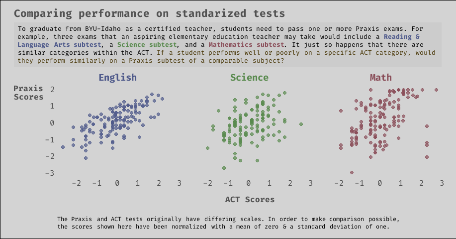
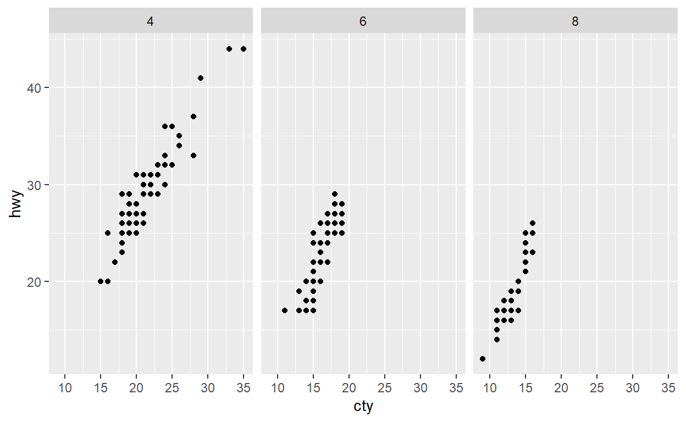
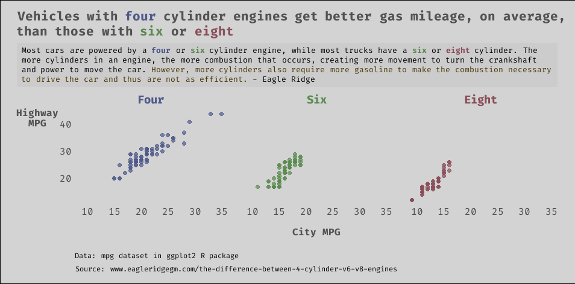

ggplot2 is arguably one of the most powerful plotting tools of any programming language. Built upon a solid grammar of graphics, ggplot2 allows you to quickly create highly customizable data visualizations. The ggtext package extends the bounds for customization even further.

For my senior project during my last semester at BYU-Idaho, my friend (also studying data science) and I are teaming up to build a hopefully helpful tool for BYU-Idaho’s Office of Teacher Preparation (OTP). The OTP is the part of BYU-I that is responsible for sending out teachers (for elementary school, high school, etc.) into the world. In order for a student, or teacher candidate, to become a fully certified teacher, they have to pass a number of Praxis exams. These are simply standardized tests that have been developed to gauge a teacher candidate’s capabilities and knowledge in different categories ranging from english to math.
My friend and I are building a web application that uses machine learning to give students a better picture of how likely they are to pass these exams. Exams cost money to take and effort to prepare for, so we hope to save students both time and money. We hope to be able to point them towards areas where they can better focus their preparation in order to increase their chances of passing.
What they say about data science projects is true: the bulk of our work thus far has been wrangling and tidying the data, as well as feature engineering and selection. Among other features that we have access to, we hope to use students’ past scores on standardized tests (for example, the ACT - see plot above) to help predict their scores on future tests. From the relationships shown in the data in the plot above, we are hopeful that ACT scores will be a fairly decent predictor.
As part of our project, we want to turn some of our exploratory plots into graphics for communication to show to faculty and other persons involved in what we are trying to accomplish. Hence the creation of the plot above.
The rest of this post will be focused on using the ggtext extension to ggplot2, as well as customizing a drab ggplot2 graphic by editing theme components.
Because of the sensitive nature of the data we are working with, I will instead demonstrate some of ggtext’s and ggplot2’s capabilities using the mpg dataset from ggplot2. We will create a similar plot to the one shown above, and this should allow you to follow along and mess with the code as desired.
First, we need to install and load the following packages:
Next, we’ll load the data from ggplot2.
dat <- ggplot2::mpg
# run ?ggplot2::mpg in the R console
# if you want to learn more about the data
glimpse(dat)
Rows: 234
Columns: 11
$ manufacturer <chr> "audi", "audi", "audi", "audi", "audi", "aud...
$ model <chr> "a4", "a4", "a4", "a4", "a4", "a4", "a4", "a...
$ displ <dbl> 1.8, 1.8, 2.0, 2.0, 2.8, 2.8, 3.1, 1.8, 1.8,...
$ year <int> 1999, 1999, 2008, 2008, 1999, 1999, 2008, 19...
$ cyl <int> 4, 4, 4, 4, 6, 6, 6, 4, 4, 4, 4, 6, 6, 6, 6,...
$ trans <chr> "auto(l5)", "manual(m5)", "manual(m6)", "aut...
$ drv <chr> "f", "f", "f", "f", "f", "f", "f", "4", "4",...
$ cty <int> 18, 21, 20, 21, 16, 18, 18, 18, 16, 20, 19, ...
$ hwy <int> 29, 29, 31, 30, 26, 26, 27, 26, 25, 28, 27, ...
$ fl <chr> "p", "p", "p", "p", "p", "p", "p", "p", "p",...
$ class <chr> "compact", "compact", "compact", "compact", ...For our plot, we will compare city miles per gallon (cty) against highway miles per gallon (hwy), faceted by number of cylinders (cyl). In this toy example, we will also use filter to exclude five cylinder vehicles, which are pretty rare.
dat %>% count(cyl)
# A tibble: 4 x 2
cyl n
* <int> <int>
1 4 81
2 5 4
3 6 79
4 8 70# A tibble: 3 x 2
cyl n
* <int> <int>
1 4 81
2 6 79
3 8 70Perhaps the most basic and simple version of the plot we could make with ggplot2 would be the following:
dat %>%
ggplot() +
geom_point(aes(x = cty, y = hwy)) +
facet_wrap(~ cyl)

Now onto the customization!
I recently discovered the showtext package, which makes it ridiculously easy to add different fonts to R graphs. We will use font_add_google to load the specific font that we want and showtext_auto to automatically use showtext for new graphic devices.
font_add_google('Fira Code')
showtext_auto()
Next, we will do a little more data manipulation to get our colors into dat. Finding a good color picker website is a must, and recently I have enjoyed using this one. After finding the right colors and their corresponding HTML codes, we’ll use mutate and case_when to create two new columns: one for displaying the cyl as words, and one to match the colors to the right values of cyl.
dat <- dat %>%
mutate(
cyl_text = case_when(
cyl == 4 ~ 'Four',
cyl == 6 ~ 'Six',
cyl == 8 ~ 'Eight'
),
cyl_color = case_when(
cyl == 4 ~ '#4E598A',
cyl == 6 ~ '#598A4E',
cyl == 8 ~ '#8A4E59'
)
)
glimpse(dat)
Rows: 230
Columns: 13
$ manufacturer <chr> "audi", "audi", "audi", "audi", "audi", "aud...
$ model <chr> "a4", "a4", "a4", "a4", "a4", "a4", "a4", "a...
$ displ <dbl> 1.8, 1.8, 2.0, 2.0, 2.8, 2.8, 3.1, 1.8, 1.8,...
$ year <int> 1999, 1999, 2008, 2008, 1999, 1999, 2008, 19...
$ cyl <int> 4, 4, 4, 4, 6, 6, 6, 4, 4, 4, 4, 6, 6, 6, 6,...
$ trans <chr> "auto(l5)", "manual(m5)", "manual(m6)", "aut...
$ drv <chr> "f", "f", "f", "f", "f", "f", "f", "4", "4",...
$ cty <int> 18, 21, 20, 21, 16, 18, 18, 18, 16, 20, 19, ...
$ hwy <int> 29, 29, 31, 30, 26, 26, 27, 26, 25, 28, 27, ...
$ fl <chr> "p", "p", "p", "p", "p", "p", "p", "p", "p",...
$ class <chr> "compact", "compact", "compact", "compact", ...
$ cyl_text <chr> "Four", "Four", "Four", "Four", "Six", "Six"...
$ cyl_color <chr> "#4E598A", "#4E598A", "#4E598A", "#4E598A", ...Now we will use glue and just a little bit of CSS to prepare the column that we will use for faceting. By doing this, the facet labels on the plot will be colored appropriately. If you have never seen glue or inline CSS before, check out glue or inline CSS. You certainly don’t need to know a whole lot of HTML or CSS to use ggtext, but just a little bit of knowledge will go a long way. w3schools is a great resource for that kind of stuff.
dat <- dat %>%
mutate(
cyl_text = glue("<b style='color:{cyl_color}'>{cyl_text}</b>")
)
# notice we just overrode the old cyl_text column
# with the same cyl_text column coupled with
# html/css styling. If that doesn't make sense now,
# hopefully it will later.
glimpse(dat)
Rows: 230
Columns: 13
$ manufacturer <chr> "audi", "audi", "audi", "audi", "audi", "aud...
$ model <chr> "a4", "a4", "a4", "a4", "a4", "a4", "a4", "a...
$ displ <dbl> 1.8, 1.8, 2.0, 2.0, 2.8, 2.8, 3.1, 1.8, 1.8,...
$ year <int> 1999, 1999, 2008, 2008, 1999, 1999, 2008, 19...
$ cyl <int> 4, 4, 4, 4, 6, 6, 6, 4, 4, 4, 4, 6, 6, 6, 6,...
$ trans <chr> "auto(l5)", "manual(m5)", "manual(m6)", "aut...
$ drv <chr> "f", "f", "f", "f", "f", "f", "f", "4", "4",...
$ cty <int> 18, 21, 20, 21, 16, 18, 18, 18, 16, 20, 19, ...
$ hwy <int> 29, 29, 31, 30, 26, 26, 27, 26, 25, 28, 27, ...
$ fl <chr> "p", "p", "p", "p", "p", "p", "p", "p", "p",...
$ class <chr> "compact", "compact", "compact", "compact", ...
$ cyl_text <glue> "<b style='color:#4E598A'>Four</b>", "<b st...
$ cyl_color <chr> "#4E598A", "#4E598A", "#4E598A", "#4E598A", ...A lot of what we will do involves modifying individual theme components. This can be somewhat tedious. I often use the docs as a reference, but some people also like the ggeasy package.
Before we get to the main code for the plot, let me point out a couple of theme elements, element_textbox_simple and element_markdown , that are unique to ggtext.
ggtext can handle attributes of markdown, HTML, and CSS that you may want to throw into the title, subtitle, labels, etc., but it will not recognize it automatically. Therefore, instead of using element_text in the theme function, you want to use element_markdown. This will make it so everything renders how you would expect it to. As mentioned, I also used element_textbox_simple to convert the title into a simple text box. What an aptly named function. Well done, Claus.
To keep things less cluttered in the code below, let’s write out the title, subtitle, and caption here, and store them in variables. You should see that we are again using some simple HTML and CSS for coloring and styling certain bits of text.
title <- "Vehicles with <b style = 'color:#4E598A;'>four</b> cylinder engines get better gas mileage, on average,<br>than those with <b style = 'color:#598A4E;'>six</b> or <b style = 'color:#8A4E59;'>eight</b>"
subtitle <- "Most cars are powered by a <b style = 'color:#4E598A;'>four</b> or <b style = 'color:#598A4E;'>six</b> cylinder engine, while most trucks have a <b style = 'color:#598A4E;'>six</b> or <b style = 'color:#8A4E59;'>eight</b> cylinder. The more cylinders in an engine, the more combustion that occurs, creating more movement to turn the crankshaft and power to move the car. <span style = 'color:#473504;'>However, more cylinders also require more gasoline to make the combustion necessary to drive the car and thus are not as efficient.</span> - Eagle Ridge"
caption <- 'Data: mpg dataset in ggplot2 R package\n
Source: www\\.eagleridgegm\\.com/the\\-difference\\-between\\-4\\-cylinder\\-v6\\-v8\\-engines'
Now instead of breaking the following chunk up into a bunch of pieces, I will do two things to hopefully help the reader understand what is going on: 1) comments interspersed throughout the code should help a lot, and 2) there is a quasi-working flip book towards the end of the post that may be of some value.
Here’s the rest of the code:
dat %>%
ggplot() +
geom_point(aes(x = cty, y = hwy, color = cyl_color),
# make the points slightly transparent and
# just a little bit bigger
alpha = 0.7, size = 2) +
# allow the HTML color codes to work as is,
# cyl_color goes inside aes() because it is
# an actual variable in the data, but we need
# scale_color_identity to interpret the column
# literally, as an html color code.
scale_color_identity() +
# facet by the column with the HTML/CSS
facet_wrap(~ cyl_text) +
# notice we are using the variables for
# title, subtitle and caption from above
labs(
title = title,
subtitle = subtitle,
x = 'City MPG',
y = 'Highway\nMPG',
caption = caption
) +
# applying a minimal theme first, and then
# we will modify individual theme components
# I think the order matters? yeah.
theme_minimal() +
# within theme() we modify individual bits
# of the entire theme. This is where
# powerful customization of your ggplot2
# graphic is possible. Remember, I don't
# memorize most of this stuff. If you use
# something a lot, then sure you will start
# to just know it. But I'm always referencing
# this: https://ggplot2.tidyverse.org/reference/theme.html
theme(
# set the font for all of the text on the
# plot to 'Fira Code' (the font we add
# up above from google fonts)
text = element_text(family = 'Fira Code'),
# hide the individual facet panels
panel.grid = element_blank(),
# increase the space between the individual
# facet panels
panel.spacing = unit(1, "lines"),
# change the entire plot background to the grayish
# color that you see in the plot
plot.background = element_rect(fill = '#D3D3D3'),
# adjust the margin, or white space, around the plot,
# I didn't want labels and things to look too squished
# # c(top, right, bottom, left)
plot.margin = unit(c(.5,.75,.5,.75), 'cm'),
# left align the plot's title to the edge of the
# entire graphic, people seem to think this looks
# better and I tend to agree
plot.title.position = 'plot',
# remember that element_markdown is from ggtext,
# in addition to allowing the html/css to render
# correctly, we are also adjusting the size, face,
# color, and lineheight of the title
plot.title = element_markdown(size = 16,
face = 'bold',
color = '#525252',
lineheight = 1.2),
# element_textbox_simple is again from ggtext,
# which creates the text box you see surrounding the
# subtitle. Again we are adjusting a few things,
# like the padding or spacing around the insight of
# the text box. I also kind of like the darker
# color just for the box.
plot.subtitle = element_textbox_simple(
size = 10,
lineheight = 1.2,
padding = margin(5.5, 5.5, 5.5, 5.5),
margin = margin(0, 0, 5.5, 0),
fill = '#CCCCCC'),
# I think I used the box here just to make it
# easier to customize the caption. I am sure
# there are other ways to do this.
plot.caption = element_textbox_simple(
size = 9,
lineheight = 1.2,
margin = margin(20, 50, 0, 0),
fill = '#D3D3D3'),
# adjusting the axis texts and titles,
# again modifying the margin slightly
# (top, right, bottom, left) to increase
# the space between the plot and the x axis
# title. The axis.title.y line adjusts the
# y axis title so that you don't have to title
# your head to the side to read the label.
axis.text = element_text(size = 12),
axis.title = element_text(size = 12, face = 'bold', color = '#525252'),
axis.title.x = element_text(margin = unit(c(.5, 0, 0, 0), "cm")),
axis.title.y = element_text(angle = 0, vjust = 1),
# increase the size of the facet labels
strip.text = element_markdown(size = 14)
)

This probably only looks decent on desktop, and even then I’m not so sure. Click on the arrows to go forward or backward in the code.
Thanks so much for reading! I hope you found this post helpful. Go forth and customize your ggplot2 graphics for better communication! Feel free to leave any questions or comments below, or shoot me an email at avery@codewithavery.com. I’m always open to feedback and happy to help anyone with their coding questions.
R.version
_
platform x86_64-w64-mingw32
arch x86_64
os mingw32
system x86_64, mingw32
status
major 4
minor 0.3
year 2020
month 10
day 10
svn rev 79318
language R
version.string R version 4.0.3 (2020-10-10)
nickname Bunny-Wunnies Freak Out packageVersion('dplyr')
[1] '1.0.4'packageVersion('ggplot2')
[1] '3.3.3'packageVersion('ggtext')
[1] '0.1.1'packageVersion('showtext')
[1] '0.9.2'packageVersion('glue')
[1] '1.4.2'